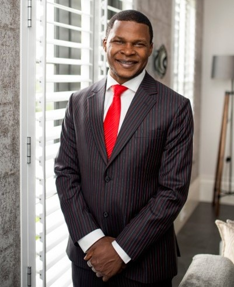

NJ Ayuk is the Executive Chairman of the African Energy Chamber, CEO of pan-African corporate law conglomerate Centurion Law Group, and the author of Big Barrels as well as Amazon and Wall Street Journal’s bestselling Billions at Play: The Future of African Energy and Doing Deals. His experience includes advising major companies and governments on energy issues and investment strategies. NJ graduated from the University of Maryland College Park and earned a Juris Doctor from William Mitchell College of Law and an MBA from the New York Institute of Technology.